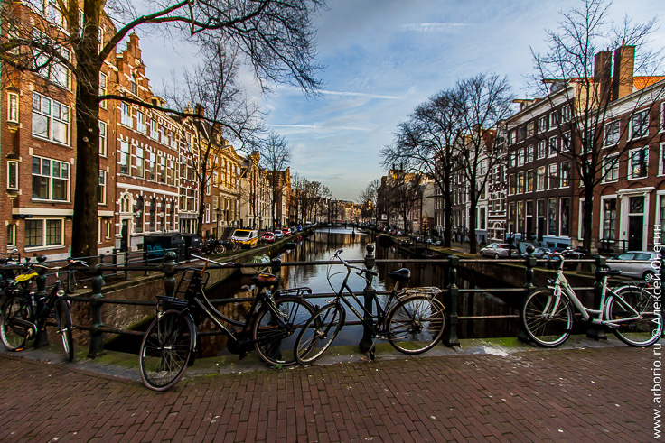
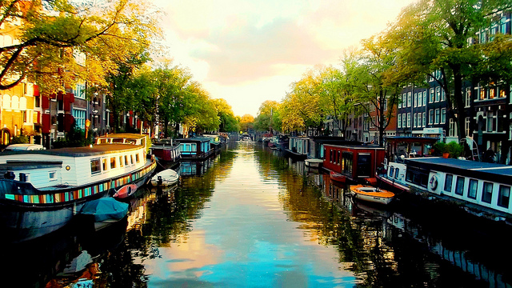
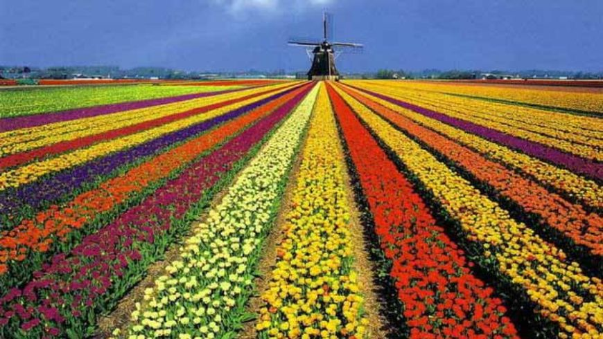
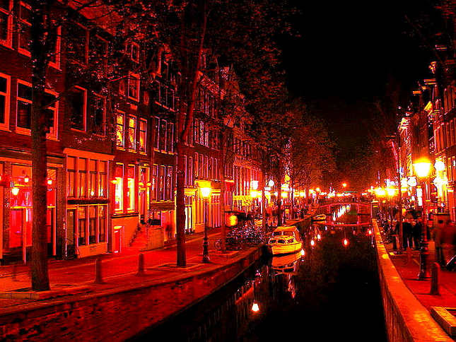

Интересные факты об Амстердаме





- Амстердам - столица Нидерландов, самый крупный город и торговый порт этой страны. При этом интересно, что правительство государства работает не здесь, а в Гааге.
- Амстердам часто сравнивают с Венецией, но немногие знают что каналов и мостов здесь значительно больше. Столица Нидерландов расположена на 4 метра ниже уровня моря - в этом городе насчитывается порядка 1200 мостов, более 150 каналов и около 90 островов. Город целиком построен на огромных сваях, вбитых в землю под толщей воды.
- Первое упоминание об этом интересном городе относится к 1275 году - в этот момент реку Амстел перегородили дамбой, чтобы защитить местность от наводнений. Тогда город и получил свое название - "Амстел Дам", дамба на Амстеле.
- Несмотря на легализацию легких наркотиков, Амстердам является одним из самых безопасных городов Европы
- В Амстердаме просто колоссальное количество велосипедов - в городе их насчитывается более 500 тысяч, а вместе с ближайшими пригородами - порядка миллиона.
- Велосипедисты здесь считаются полноправными участниками дорожного движения - для них оборудовано огромное количество велосипедных дорожек со специальными светофорами, так что во многих случаях они имеют преимущество по отношению к автомобилям.
- Говорят, что когда "железный конь" приходит в негодность, настоящий амстердамец выбрасывает его в канал - поэтому дно самых популярных каналов буквально усеяно велосипедами.